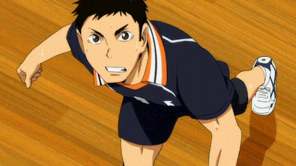

El tema del que he elegido hablar es el voleibol, un deporte de equipo.
── ⋆⋅🏐⋅⋆ ──── ⋆⋅🏐⋅⋆ ──── ⋆⋅🏐⋅⋆ ──── ⋆⋅🏐⋅⋆ ──── ⋆⋅🏐⋅⋆ ──── ⋆⋅🏐⋅⋆ ──── ⋆⋅🏐⋅⋆ ──── ⋆⋅🏐⋅⋆ ──── ⋆⋅🏐⋅⋆ ──── ⋆⋅🏐⋅⋆ ──── ⋆⋅🏐⋅⋆ ──── ⋆⋅🏐⋅⋆ ──
El vóley es un deporte que se juega con una pelota y en el que dos equipos, integrados por seis jugadores cada uno, se enfrentan sobre una área de juego separada por una red central.
El objetivo del juego es pasar el balón por encima de la red, logrando que llegue al suelo del campo contrario mientras el equipo adversario intenta impedir que se consiga.
Existen bastantes clases de vóley, pero la más común es el vóley playa.
En este deporte se usan una serie de técnicas base, como el saque, la recepción, la colocación, el remate, el bloqueo y la defensa.
Cada punto se inicia con un saque del balón desde detrás de la línea de fondo.
Se lanza el balón al aire y se golpea hacia el campo contrario. Se puede hacer de pie o en salto.
La recepción es interceptar y controlar el balón que viene del saque del equipo contrario.
Es el primer golpeo del equipo para construir su ataque cuando no está en posesión del saque.
Normalmente el segundo toque.
La colocación se realiza alzando las manos con un pase de dedos, el pase más preciso en el voleibol.
El colocador tiene en su mano la responsabilidad de ir distribuyendo los balones a lo largo del juego, a los distintos rematadores y por las distintas zonas.
Tercer y último toque.
El jugador, saltando, envía el balón con fuerza al campo contrario buscando que caiga al suelo del equipo contrario, o contra los propios jugadores contrarios para que el balón vaya fuera.
Primera defensa ante el ataque rival.
Esta acción está encaminada a interceptar cualquier ataque del equipo contrario, saltando junto a la red con los brazos alzados buscando devolver directamente el balón al campo contrario, o en su defecto, estrecharle el campo de ataque para inducirlo a echar el balón fuera del terreno de juego.

Es la acción que realizan los jugadores luego de que la pelota impacte o cruce la línea del bloqueo, cubriendo las zonas que quedan libres en el campo por fuera de la sombra del bloqueo.
El balón debe ser tocado o impulsado con golpes limpios, pero no puede ser parado, sujetado, retenido o acompañado. Cada equipo dispone de un máximo de tres toques para devolver el balón al campo contrario.
El balón se golpea normalmente con manos y brazos.
Una de las características más peculiares del voleibol es que los jugadores tienen que ir rotando sus posiciones a medida que van consiguiendo puntos.
Los partidos de voleibol se disputan al mejor de cinco tandas o bloques de puntos que reciben.
Un equipo gana un set cuando alcanza o supera los 25 puntos con una ventaja de dos.
En un partido se pueden alinear hasta dos jugadores especiales denominados líberos. Un líbero es un jugador defensivo que puede entrar y salir continuamente del campo sustituyendo a cualquiera de los otros jugadores cuando por rotación se encuentran en posición defensiva. Únicamente puede jugar en la cancha un líbero a la vez. Los líberos no pueden ser capitanes, no pueden sacar, no pueden bloquear y no pueden hacer la acción de rematar.
Rotaciones y cancha